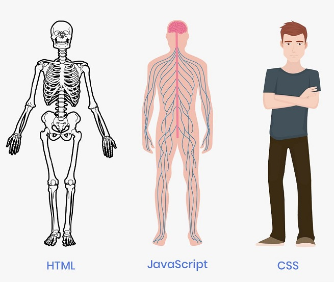

HTML, CSS e Javascript, quais as diferenças?
Essas são as três principais linguagens utilizadas no front-end da nossa aplicação, ou seja, são utilizadas do lado do cliente no próprio navegador. Mas qual será a diferença entre elas? Será que todas de fato são linguagens de programação? Descubra mais aqui nesse artigo!
Um pouco da história de cada uma
Tente imaginar como eram alguns anos atrás, em que as empresas que desejavam compartilhar documentos entre si, ou entre seus próprios funcionários não tinham a possibilidade de fazer isso de forma rápida e prática como hoje, em que com apenas com um clique conseguimos fazer todo esse transporte. Para eles, era necessário utilizar de outras ferramentas que demandam muito mais tempo. Sendo assim, em 1991, Tim Berners-Lee teve uma grande ideia que não apenas facilitaria o dia a dia de empresas, mas mudaria o mundo: ele projetou o HTML.
Essa linguagem de marcação, portanto, havia sido desenvolvida para possibilitar o compartilhamento de documentos de forma mais prática. Porém, a partir do ano seguinte, foi criada a World Wide Web (WWW) , uma rede de alcance mundial, tornando o HTML uma ferramenta utilizada para tudo e por todos.
Já o CSS surgiu como consequência desse grande crescimento do HTML. Quanto mais o HTML era utilizado, mais os desenvolvedores usavam da criatividade para deixar as páginas bonitas e estilosas. Porém, toda essa parte estética era escrita no mesmo arquivo da parte estrutural, deixando-os gigantes e cada vez mais difíceis de entender. Sendo assim, em 1995, foi criado o CSS para tomar conta da parte estética da página, de forma separada da estrutura, papel do HTML.
Por fim, o Javascript foi criado a partir de uma grande competição entre gigantes do mercado na época: Microsoft e Netscape.
Tudo começou com a criação de uma linguagem de servidor pela Netscape para ser implantada nos servidores web da empresa. Quando a Microsoft descobriu que essa ideia poderia ter sucesso, não perdeu tempo e começou a desenvolver a linguagem JScript para implementar nos seus próprios servidores web ISS. Percebendo que sua ideia estava sendo copiada, a Netscape decidiu desenvolver uma tecnologia do lado do cliente, que rodasse no próprio navegador. Ela acabou tornando tudo mais rápido. Por isso, a Microsoft novamente percebeu uma grande oportunidade de mercado, e resolveu desenvolver um sistema semelhante ao da empresa concorrente.
Existiam então duas tecnologias “client-side”: JScript da Microsoft e Javascript da Netcape, cada uma funcionando apenas nos navegadores das respectivas empresas. Para padronizar o Javascript, a Netscape não perdeu tempo e o enviou para a empresa ECMA, permitindo sua incorporação à maioria dos navegadores existentes. A partir daí surgiu o ECMAscript, que nada mais era do que o novo nome para o Javascript, mesmo até hoje não sendo muito utilizado.
HTML

Seu nome tem origem do inglês Hyper Text Markup Language, que significa linguagem de marcação de hipertexto
.
Como assim linguagem de marcação
? Pois é, o HTML não é considerado uma linguagem de programação como as demais e você já vai descobrir o motivo disso.
Imagine uma página web, como essa mesmo que você esta lendo agora. É possível perceber que existem diversos elementos separados, como cabeçalho, título, parágrafos, imagens e muitos outros. Toda a organização desses elementos é feita pelo HTML. Ele é utilizado para criar toda a estrutura da página e, para isso, utiliza as famosas tags (etiquetas) para sinalizar onde cada tipo de elemento será implementado.
Por exemplo, se você deseja inserir um parágrafo na tela, poderá utilizar a tag <p></p> para isso, colocando o texto desejado dentro do elemento, como mostrado abaixo:
<p>Este é um parágrafo</p>
Sendo assim, existem diversas tags de diversas estruturas para montar o esqueleto da página. Mas, como é possível deixar esse parágrafo azul? Ou mudar a fonte da letra? Aí entra a nossa próxima tecnologia: CSS.
CSS

Cascading Style Sheet, mais conhecido como CSS, é uma linguagem de estilos que, assim como o HTML, também não é considerada uma linguagem de programação. Ela é responsável por separar a parte estrutural da aplicação (que ficará nas mãos do HTML) da parte estética. Para utilizar o CSS, usamos da seguinte sintaxe:
seletor {
propriedade: valor;
}
O seletor será o elemento que queremos estilizar (podendo ser uma tag, uma classe, um identificador...), a propriedade será o que iremos alterar (como color, font-size, width...) e o valor será de fato a alteração (como por exemplo: red para color, 18px para font-size e assim por diante).
Sendo assim, quando utilizamos uma tag HTML, como o que usamos de exemplo acima, podemos estilizá-la da seguinte forma:
p {
color: blue;
}
Com isso, todos os parágrafos ficarão azuis.
Mais uma informação interessante: se traduzirmos o nome dessa tecnologia, teremos “folha de estilo em cascata”. O que significa isso?
O CSS pode ser escrito dentro do arquivo HTML, utilizando o style como elemento <style> ou como atributo de algum outro elemento <p style="""">. Assim como também pode ser escrito em um arquivo separado, apenas de CSS, importando-o no documento HTML da seguinte forma:
<link rel=”stylesheet” href=”nome_do_arquivo_css.css”>
Porém, algo muito importante a ser destacado é a possibilidade de usar mais de um arquivo CSS ao mesmo tempo, para estilizar a aplicação. Daí a palavra “cascata”. Isso permite várias interações diferentes, porém é preciso tomar cuidado para não se perder e deixar o código confuso, seguindo sempre as regras para isso.
Javascript

Para completar a grande tríade do desenvolvimento front-end, temos o Javascript, a única linguagem de programação das 3 tecnologias citadas.
Você conseguiu perceber que já criamos a estrutura da página com o HTML e já estilizamos os elementos com o CSS. Mas e as funcionalidades dinâmicas que vemos quando abrimos um site, como acontecem?
Isso é feito pelo Javascript. Ele adiciona movimento às páginas web, além de permitir o processamento e transformação de dados enviados e recebidos. Ele permite criar conteúdos que se atualizam de forma dinâmica e animada, dando vida às aplicações que antes eram apenas estruturadas com HTML de forma estática.
Sempre que vir uma caixinha de alerta apitando em um site, ou um mecanismo de autocomplete em algum campo, saiba que é o Javascript agindo. Um exemplo de código utilizando a caixa de alerta:
alert(‘Hello World’);
Assim como o CSS, o Javascript pode ser escrito tanto dentro do código HTML:
<script>
alert(‘Hello World’);
</script>
Quanto em um arquivo separado, sendo importado dentro do atributo desse mesmo elemento:
<script src=”nome_do_arquivo_js.js”> </script>
Algo importante a ser destacado é que essa linguagem pode tanto ser usada do lado do cliente, como do lado do servidor, utilizando de tecnologias necessárias para isso, como o Node.js.
O papel de cada uma na aplicação
Portanto, depois de conhecer um pouco de cada uma dessas tecnologias, é possível perceber as diferentes funções que desempenham dentro de uma página web:
- HTML: linguagem de marcação utilizada para estruturar os elementos da página, como parágrafos, links, títulos, tabelas, imagens e até vídeos.
- CSS: linguagem de estilos utilizada para definir cores, fontes, tamanhos, posicionamento e qualquer outro valor estético para os elementos da página.
- Javascript: linguagem de programação utilizada para deixar a página com mais movimento, podendo atualizar elementos dinamicamente e lidar melhor com dados enviados e recebidos na página.
Comparando agora cada uma delas, podemos utilizar de exemplo o corpo humano como uma página web da seguinte forma:
O HTML é o esqueleto, composto dos ossos que o sustenta. O CSS é a pele, cabelo e roupas, criando o visual que realmente enxergamos quando olhamos para alguma pessoa. E por fim, o Javascript é o músculo, que dá movimento ao corpo.